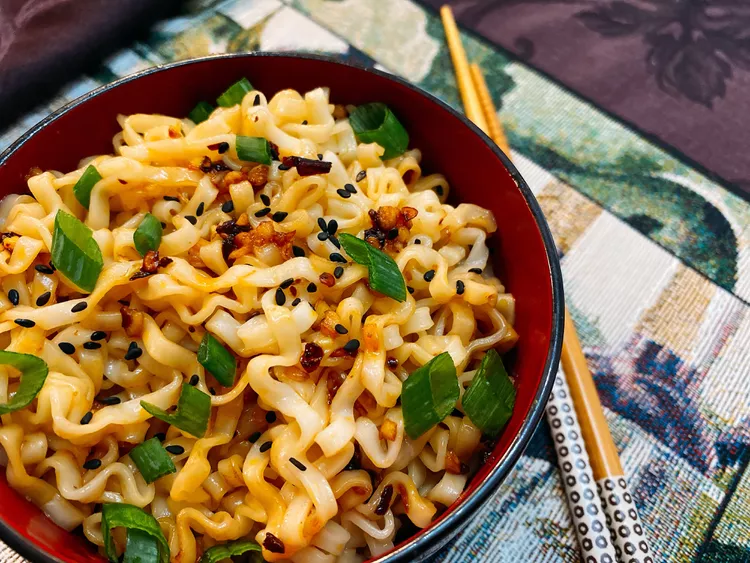

Noodles

Description
Noodles is a type of flat pasta, typically made from an unleavened dough of wheat flour
mixed with water or eggs, and formed into sheets or other shapes, then baked.
Ingredients
- 1 package ramen noodles
- 2 teaspoons sesame oil
- 2 teaspoons soy sauce
- 1 tablespoon chiu chow style chili oil
- 4 cloves garlic, minced
- 1 pinch black sesame seeds
- 2 green onions, sliced diagonally, or to taste
Steps
- Bring a pot of water to a boil over high heat.
- Add ramen noodles, and cook until tender, 3 to 4 minutes.
- Meanwhile, heat sesame oil, soy sauce, and chili oil in a wok over medium-high heat.
- Add garlic and stir fry until fragrant, 30 to 45 seconds.
- Remove from heat. Drain ramen noodles, add to the wok, and toss to coat.
- Sprinkle with sesame seeds and scallions for garnish.